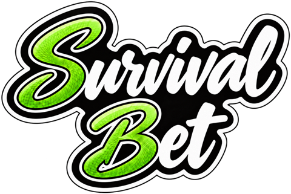

Política de privacidad
SurvivalBet · Actualizado el 15 de octubre de 2026
Aquí te explicamos qué datos tuyos trata SurvivalBet, para qué, con quién se comparten y cómo puedes controlarlos.
1. Quién es el responsable
SurvivalBet. Para cualquier duda sobre tus datos escríbenos a holaholajose@hotmail.com.
2. Qué datos tratamos y para qué
No recogemos tu ubicación, tus contactos ni datos de pago. La app solo accede a tus fotos cuando eliges una. No usamos herramientas de analítica ni publicidad personalizada.
- Cuenta: tu correo electrónico, tu contraseña (se guarda cifrada y nosotros no podemos verla) y tu nombre de usuario. Sirven para crear tu cuenta y que puedas entrar. Base legal: ejecución del servicio que nos pides.
- Perfil: tu icono o foto de perfil y el color de tu avatar. Los ven los miembros de tus grupos.
- Juego: los grupos a los que perteneces, tus monedas, tus apuestas, tus manos de póker, tus tiradas de dados, tus votos y los resultados. Son necesarios para que el juego funcione. Base legal: ejecución del servicio.
- Contenido que añades: mensajes del chat, GIFs que eliges y fotos de fondo de tus grupos.
- Avisos (solo si los activas): un identificador de tu dispositivo, su modelo y tus preferencias de avisos. Base legal: tu consentimiento, que puedes retirar en cualquier momento desde Perfil o desde los ajustes del móvil.
- Denuncias: si denuncias un mensaje guardamos qué mensaje es, el motivo que indicas y tu usuario, para poder revisarlo. La persona denunciada no ve quién ha denunciado. Base legal: interés legítimo en mantener un entorno seguro.
- Datos técnicos: registros del servidor (por ejemplo la dirección IP y la fecha de cada conexión) necesarios para la seguridad y el funcionamiento del servicio. Base legal: interés legítimo en mantener el servicio seguro.
3. Quién más ve o recibe tus datos
No vendemos tus datos ni los usamos para publicidad de terceros.
Algunos de estos proveedores pueden tratar datos fuera del Espacio Económico Europeo; lo hacen con las garantías que exige el RGPD, como las cláusulas contractuales tipo.
- Los miembros de tus grupos ven tu nombre, tu foto, tus monedas, si sigues en juego, tus mensajes y el resultado de cada jornada. Tus apuestas, manos, tiradas y votos de una jornada no se muestran a los demás hasta que esa jornada se cierra.
- Supabase: aloja la base de datos, la autenticación, las fotos y las funciones del servidor, en centros de datos de la Unión Europea (Irlanda).
- Expo (servicio de notificaciones), y Google (Firebase Cloud Messaging) en Android o Apple (APNs) en iPhone: llevan los avisos hasta tu móvil si los has activado.
- Klipy: es el buscador de GIFs. Cuando lo usas se le envía lo que buscas y un identificador de tu cuenta que no incluye tu nombre ni tu correo.
- Los resultados deportivos y las cotizaciones se descargan de fuentes públicas desde nuestro servidor; en esas peticiones no se envía ningún dato tuyo.
4. Cuánto tiempo guardamos tus datos
Mientras tengas la cuenta. Si la borras (Perfil → Borrar mi cuenta) eliminamos de inmediato tu perfil, tu foto, tus apuestas, tus manos, tus tiradas, tus votos, tus mensajes y tu pertenencia a los grupos. Los grupos que creaste pasan a otro jugador, o se borran si no queda nadie.
En el historial de temporadas ya terminadas de otros grupos apareces solo como «Jugador eliminado», sin nombre ni foto. Los datos pueden permanecer un tiempo limitado en copias de seguridad cifradas del proveedor antes de desaparecer por completo.
5. Tus derechos
Puedes acceder a tus datos, rectificarlos, pedir que los borremos, oponerte a su tratamiento, limitarlo y pedir su portabilidad. El borrado puedes hacerlo tú mismo desde la app; para el resto escríbenos a holaholajose@hotmail.com.
Si crees que no tratamos bien tus datos puedes reclamar ante la Agencia Española de Protección de Datos (www.aepd.es).
6. Menores
SurvivalBet no está dirigida a menores de 16 años y no recogemos sus datos a sabiendas. Si descubrimos que una cuenta es de un menor, la eliminaremos.
7. Seguridad
Las comunicaciones van cifradas, las contraseñas se guardan cifradas y cada jugador solo puede leer los datos que le corresponden. Ningún sistema es infalible, pero trabajamos para proteger tu información.
8. Cambios en esta política
Si cambiamos algo importante te lo avisaremos en la app. Esta versión es del 15 de octubre de 2026.